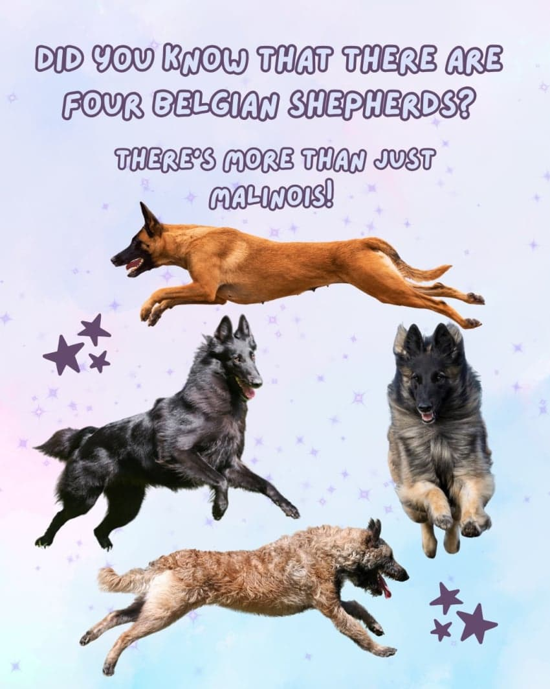
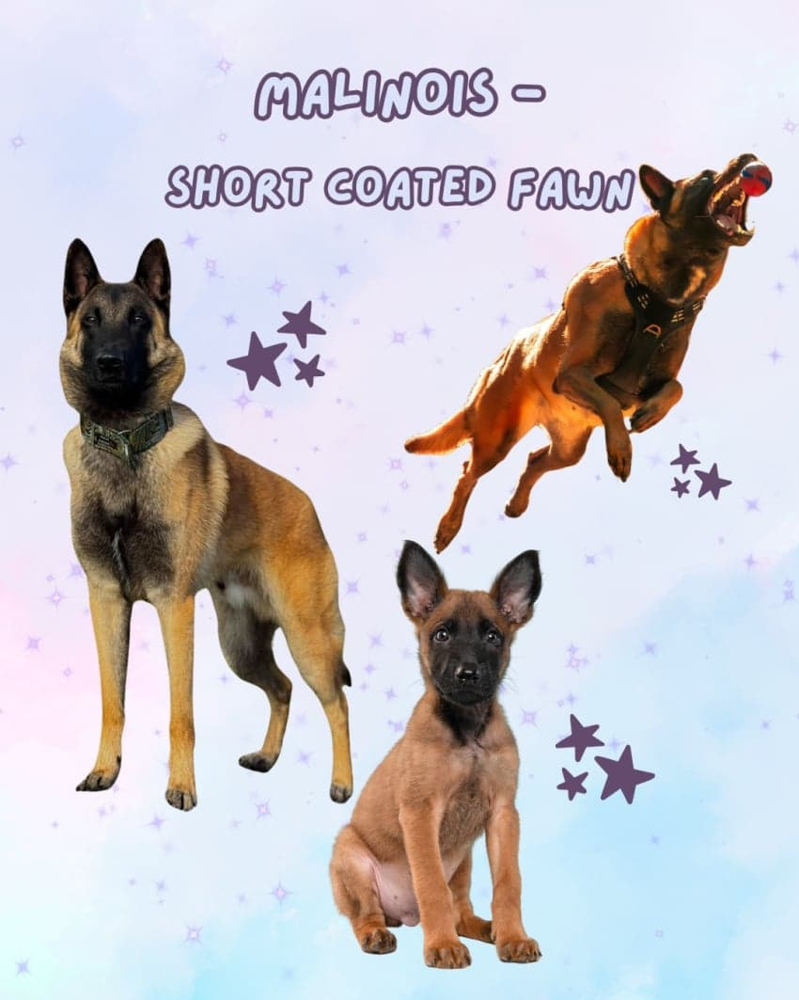
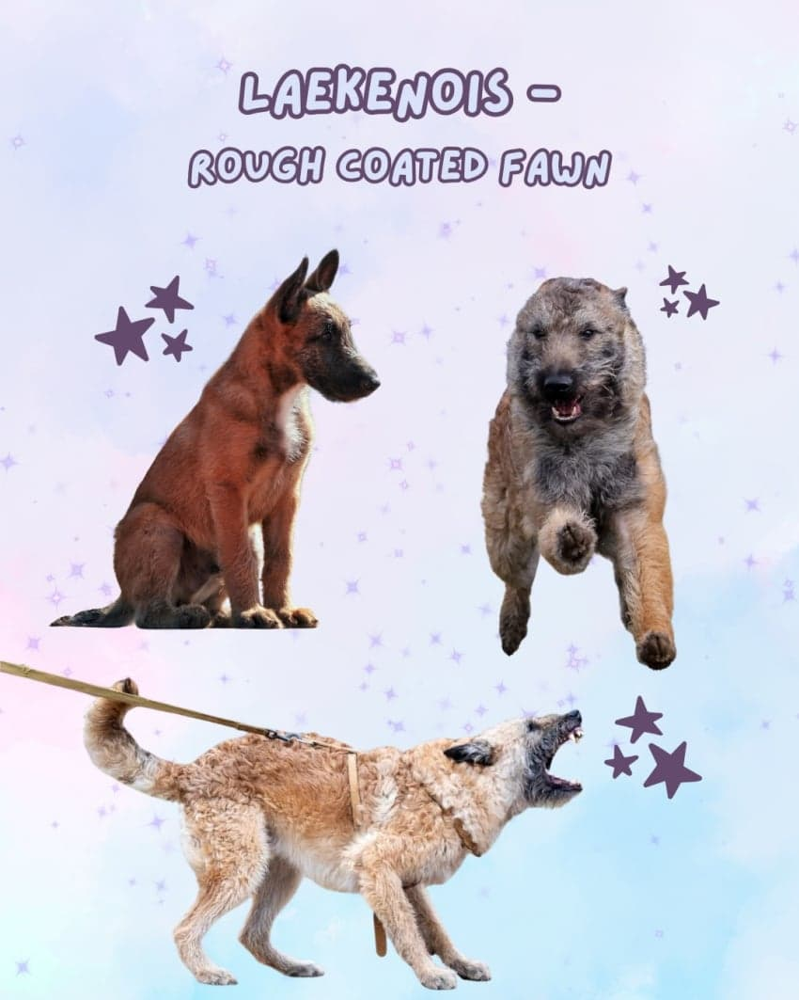
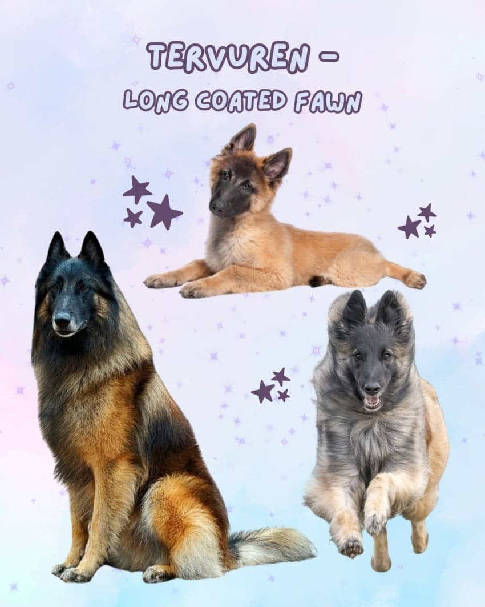
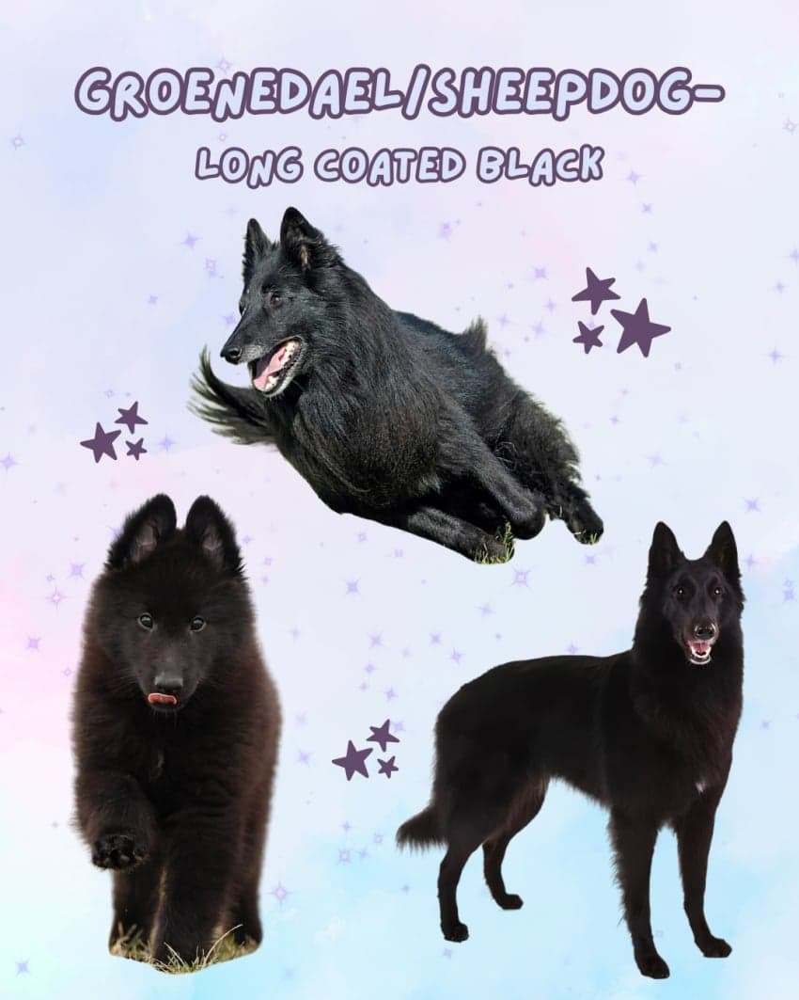
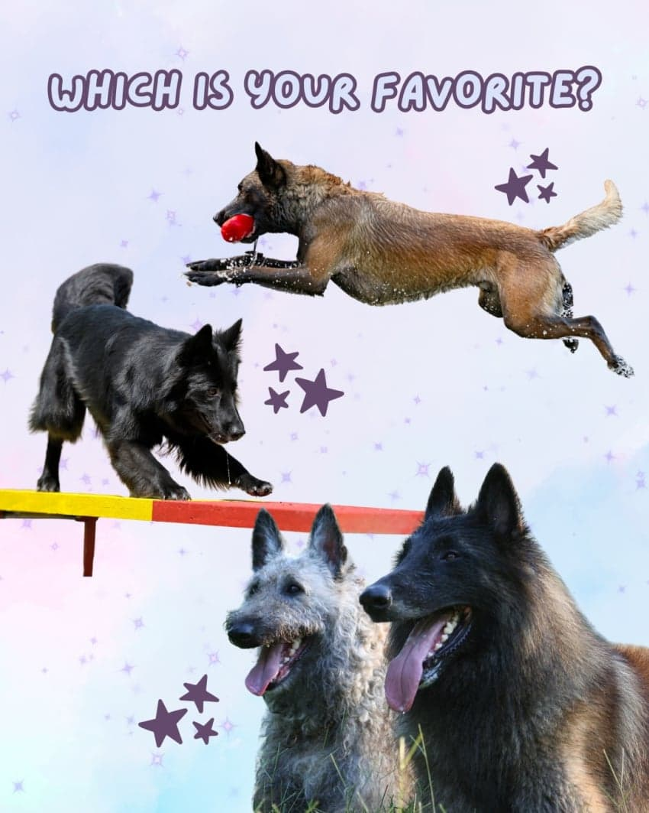

벨지안 셰퍼드는 FCI(세계애견연맹) 기준
하나의 품종으로 등록되어 있으며,
털의 길이·색상·질감에 따라
총 4가지 종류로 나뉜다고 함

벨지안 마리노이즈 (Belgian Malinois)
4견종 중 유일한 단모(짧은 털)
황갈색 바탕에 얼굴 전체와 귀 부분에 시그니처인
검은 마스크가 씌워진 듯한 생김새임
에너지가 폭발적이고 반응 속도가
상위 1% 수준으로 빠르다고 함
현대 경찰견, 군견(K-9), 특수수색견 분야에서
가장 독보적으로 활약하는 견종
이름의 유래는 벨기에의 도시 말린(Malines)

벨지안 라케노이즈 (Belgian Laekenois)
곱슬거리고 거친 와이어 헤어를 가졌음
헝클어진 듯 빈티지한 느낌의
황갈색 털이 몸 전체를 덮고 있음
벨지안 셰퍼드 중 개체 수가 가장 적은 희귀 견종임
과거 리넨(마직물)을 말리는 들판을 지키던
파수꾼 출신으로 튼튼하고 경계심이 철저함
이름의 유래는 벨기에 브뤼셀 북쪽의
라켄(Laeken) 지역 및 라켄 왕궁

벨지안 테르뷰렌 (Belgian Tervuren)
풍성하고 긴 장모를 가진 견종
황갈색 또는 붉은 갈색 바탕에
털 끝부분마다 검은색 섀도잉이 들어가 있어
깊이감 있는 그라데이션을 보여줌
그로넨달과 외형 구조는 동일하지만 코트 색상이 다름
지능이 매우 높고 기품 있는 외모 덕분에
해외에서는 도그쇼나 전문 어질리티 종목에서
인기가 높다고 함
이름의 유래는 번식자의 마을인
테르뷰렌(Tervuren) 지역

벨지안 그로넨달 (Belgian Groenendal)
머리부터 발끝까지 칠흑 같은 윤기 나는
올 블랙 장모를 자랑하는 견종
가슴 쪽에 미세한 흰색 털이 조금 섞이기도 함
늑대를 연상시키는 세련되고 우아한 자태를 지님
충성심이 매우 길고 보호자와의 교감을 중시하며,
수색구조견 및 반려견으로도 많은 사랑을 받음
이름의 유래는 최초 번식자인 니콜라스가 운영하던
레스토랑 샤토 그로넨달(Château Groenendael)

외형적 특징은 확연히 다르지만,
모두 뛰어난 지능과 체력,
강력한 작업 능력을 갖춘
훌륭한 워킹독이라는 공통점이 있음.
댓글
수집 당시 댓글 33개
싱갤용 · 11.04 22:10:39
· 문디배설 · 11.04 22:14:26
· 싱갤용 · 11.04 22:16:50
· 뭐든지뉴비 · 11.04 23:21:16
ㅇㅇ · 11.04 22:11:05
· ㅇㅇ · 11.04 22:19:16
· ㅇㅇ · 11.04 22:25:48
· 개댇지 · 11.04 22:27:14
개독 · 11.04 22:13:35
쟈지우유푸딩 · 11.04 22:34:05
· ㅇㅇ · 11.05 04:14:33
· 00 · 11.06 10:36:10
주예수그리스도 · 11.04 22:36:42
땨뗘(봇) · 11.06 00:05:06
암타황제강시현 · 11.06 00:07:15
· ㅋㅋ · 11.06 00:07:53
ㅋㅋ · 11.06 00:07:16
· 암타황제강시현 · 11.06 00:09:12
ㅇㅇ · 11.06 00:30:49
지발돈좀 · 11.06 00:33:56
· 지발돈좀 · 11.06 00:34:06
· 지발돈좀 · 11.06 00:34:27
· 지발돈좀 · 11.06 00:34:32
ㅇㅇ · 11.06 00:41:05
· 00 · 11.06 10:38:10
ㅇㅇ · 11.06 01:16:09
ㅇㅇ · 11.06 01:17:26
ㅇㅇ · 11.06 01:17:29
키나루디안마기 · 11.06 02:44:45
gah! · 11.06 10:52:31
JungNu · 11.06 21:30:09
ㅇㅇ · 11.06 22:25:57
환란 전 교회 휴거 · 11.06 23:45:01